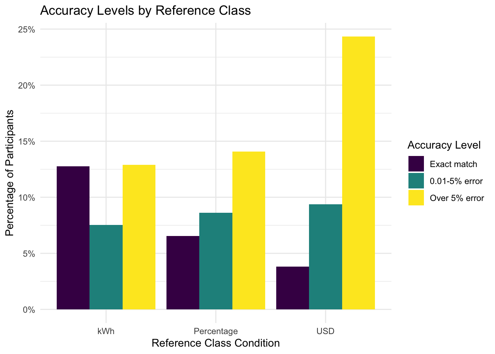
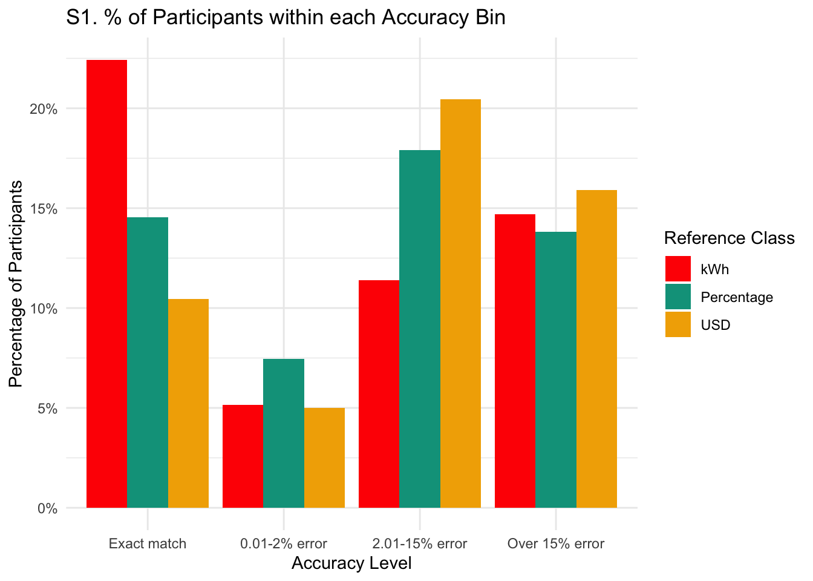
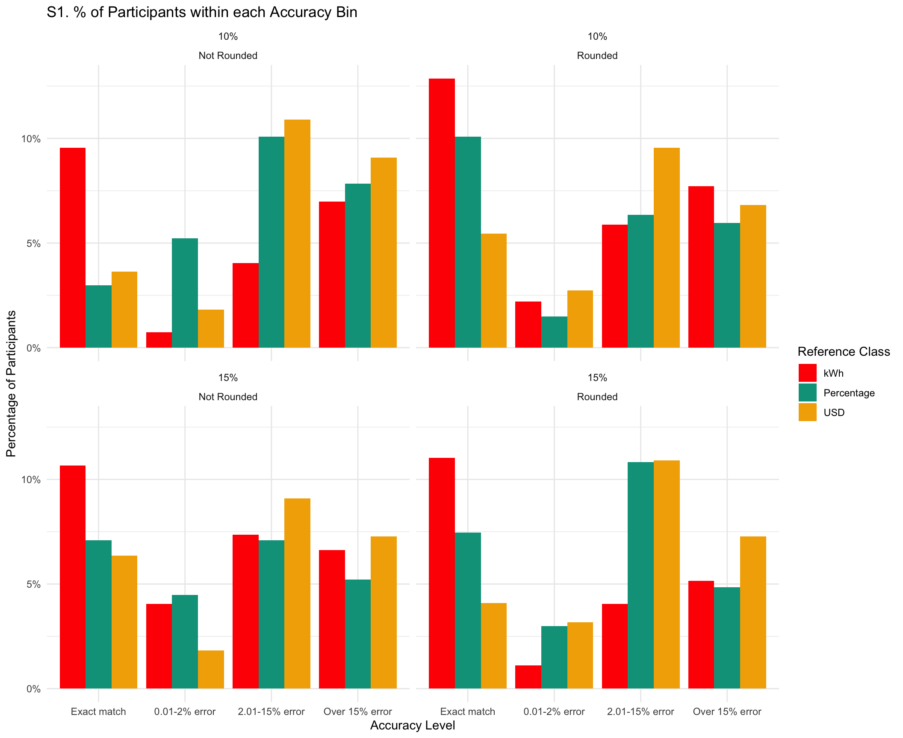
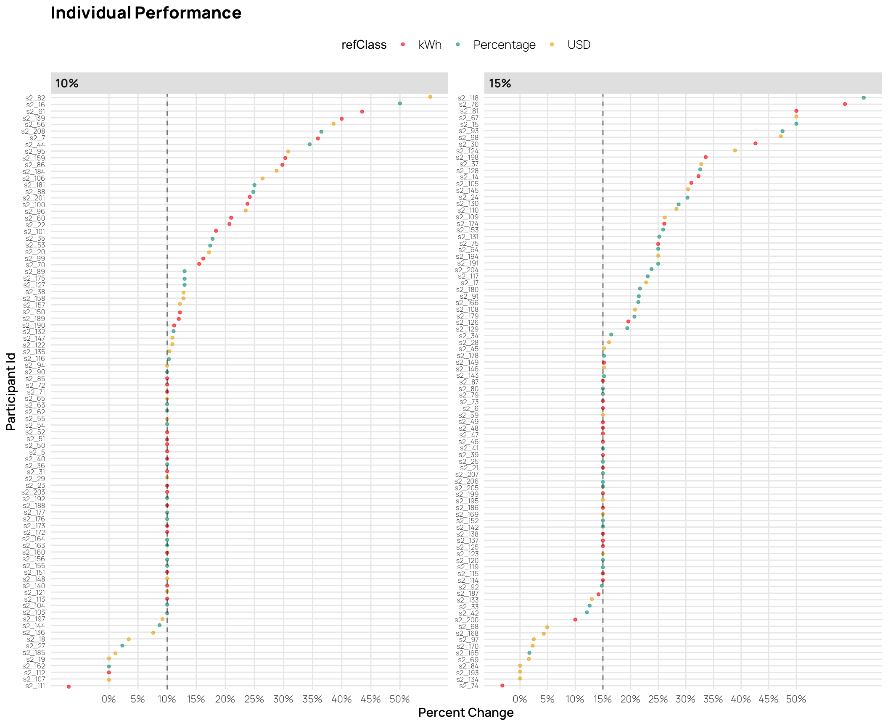

![]()

Introduction
highlight the significant contribution of residential energy consumption to carbon emissions and the potential for substantial reductions. Make point about urgency of climate change? (IPCC (2014) and EIA (2012) ).
Electricity bills are a primary source of energy-use information for consumers and offer a promising avenue for enhancing communication about energy consumption (Fischer, 2008)
Literature Review
Energy poverty continues to be a pervasive issue in the United States Memmott et al. (2021). This challenge partly arises from difficulties in converting information across numerical formats, impeding the development of precise energy reduction plans Reimer et al. (2015). Prior research by Canfield et al. (2017) demonstrated that presenting energy information in tabular formats enhances comprehension relative to graphs.
The way numerical information is presented can significantly affect how individuals process and use that information (Reimer et al., 2015) . The reference class problem highlights that numbers without clear reference points can lead to misinterpretation, as the meaning of a statistic depends on the category or class it refers to (Gigerenzer & Edwards, 2003; Reimer et al., 2015). Presenting energy information in absolute units (e.g., kWh) provides a clear reference class, potentially enhancing comprehension.
The concept of cognitive fit posits that performance improves when the information presentation format aligns with the task requirements (Vessey, 1991), and that such an alignment can reduce cognitive load and enhance accuracy in planning (Shah & Freedman, 2011). For instance, tables are generally more effective than graphs for conveying specific electricity usage data because they facilitate straightforward point reading (Canfield et al., 2017). However, the effectiveness of the format varies with the type of information and individual differences, such as energy literacy, which significantly impacts comprehension and conservation intent. Moreover, the unit in which numerical information is presented influences how decision-makers evaluate and choose between options, with default units increasing value sensitivity (Herberz et al., 2020). In the context of energy, presenting information in terms of multiple translations can increase preference for options aligned with activated objectives, such as pro-environmental values (Ungemach et al., 2018). Furthermore, mental accounting mechanisms, where individuals create mental budgets linking specific consumption acts to specific payments, significantly impact energy decisions and behaviors (Hahnel et al., 2020).
Evidence from research on energy consumption feedback, normative comparisons, and eco-feedback platforms suggests that comprehensible and contextually meaningful data presentations can improve users’ ability to plan reductions, especially when these formats are integrated into daily routines (Canfield et al., 2017; Fischer, 2008; Kim et al., 2022; Schwartz et al., 2015). Furthermore, temporal and monetary frames have been shown to alter decision quality, with monthly costs or absolute consumption levels often encouraging more energy-efficient intentions than abstract annual or percentage-based metrics (Gill et al., 2022; Larrick & Soll, 2008). In this context, tailoring reference classes to align with intuitive cognitive processes can help bridge the gap between aggregate reduction goals and targeted, appliance-specific conservation strategies.
Furthermore, research suggests that natural frequencies and absolute numbers are generally easier for individuals to understand compared to percentages or probabilities Hoffrage et al. (2000). In the context of energy conservation, using absolute units may facilitate more accurate planning and decision-making by aligning with intuitive cognitive processing.
Despite existing studies on energy-use communication and format effects, limited research has explored how different numerical representations influence consumers’ ability to create accurate energy conservation plans. Specifically, there is a gap in understanding how presenting energy information in absolute units versus percentages or monetary terms affects the precision of planning appliance-specific reductions. Addressing this gap is crucial for developing effective interventions that promote energy conservation behaviors.
Hypotheses
Building on these findings and informed by prior work showing that frequencies (like absolute units in kWh) are easier to comprehend and facilitate more precise decision-making compared to percentages, our study also utilizes a tabular format, but manipulates whether participants must consider energy information presented as absolute units (kWh), percentages (%), or monetary costs (USD). We hypothesize that presenting information in absolute units (kWh) will lead to more accurate household energy conservation planning.
Experiment 1
See Figure 1 for an example of a planning trial as it was seen by participants.
Methods
Participants
We implemented our task and surveys on Qualtrics, and recruited participants through Amazon Mechanical Turk. In Experiment 1, 252 participants were initially recruited, but data from 17 participants were corrupted due to experimenter error, leaving a final sample of 235 participants. Most participants (76%) reported using a calculator to complete the task.
Materials and Design
The study employed a mixed design with reference class (kWh, percentage, USD) as a between-subjects factor and state/family scenario as a within-subjects factor. Each participant completed energy reduction planning tasks for two different states, with state order counterbalanced across participants. The family scenarios featured four households in different climate regions: Texas (Smith family) and California (Adams family) representing warm climates, and Colorado (Wells family) and Massachusetts (Davis family) representing cold climates. We obtain average utility use from each state by CITE SOURCE FOR STATE AVGS?
Procedure
Participants received energy usage data for two hypothetical families and were tasked with creating action plans to meet specified reduction goals by allocating usage across five appliance categories: heating, cooling, water heating, refrigerator, and and other appliances (e.g., TV, lighting).
For each family scenario, the participants were shown a table containing the families utility usage from the prior year, alongside the state averages for each appliance category (both prior year usage and stage averages are always shown in kWh). For each scenario, participants were asked to create two possible action plans to achieve the target reduction in total household energy usage (see Figure 1). Depending on their reference class condition, the target reduction amount presented either in kilowatt-hours (kWh), as percentages of total household usage, or in U.S. dollars. In all conditions, the target reduction was equivalent to a 15% reduction in total household kWh.

Additional data collected included:
- Energy Literacy Quiz: An 8-item questionnaire assessing participants’ knowledge of energy consumption and conversion.
- Calculator Usage Tracking: Questions determined whether participants used a calculator, paper/pen, or other methods to complete the tasks.
- Demographic Survey: Collected information on gender, age, income, education, employment status, and state of residence.
- Environmental Attitudes Survey: Assessed participants’ pro-environmental attitudes and perceived importance of energy conservation.
Results
Data Analysis
All preprocessing and analyses were carried out in R (Team, 2020) and the tidyverse package (Wickham et al., 2019). Mixed Bayesian regressions were fit using the brms package (Bürkner, 2017), with participants and family scenario (states) set as random effects.
| Reference Class | Avg. % Change | % meeting goal (exact) | % meeting goal (close match) | Abs. Deviation | Log Abs. Deviation |
|---|---|---|---|---|---|
| kWh | 0.22 | 0.38 | 0.54 | 0.03 | -3.7 |
| Percentage | 0.21 | 0.22 | 0.40 | 0.06 | -3.1 |
| USD | 0.23 | 0.10 | 0.22 | 0.10 | -2.4 |
Table 1 that participants in the kWh condition met the target goal 38% of the time, compared to 22% for the Percentage condition and 10% for the USD condition. Moreover, the kWh reference class exhibited smaller deviations from the target reduction, suggesting that participants performed more accurately when the goal was framed in kWh rather than percentages or USD.
As shown in Table 1, participants in the kWh condition exactly met the target reduction goal 38% of the time, significantly outperforming those in the Percentage (22%) and USD (10%) conditions. Furthermore, the kWh reference class exhibited notably smaller mean absolute deviations (0.03) compared to Percentage (0.06) and USD (0.10), suggesting that presenting the reduction goal in absolute units facilitated more precise allocations.
| Accuracy Level | kWh | Percentage | USD | Combined Groups % |
|---|---|---|---|---|
| Exact match | 38.5% | 22.4% | 10.2% | 23.1% |
| 0.01-2% error | 15.5% | 17.2% | 11.6% | 14.5% |
| 2.01-15% error | 28.3% | 43.7% | 50.9% | 41.3% |
| Over 15% error | 17.8% | 16.8% | 27.3% | 21.1% |

We next categorized responses into four accuracy levels (exact match [0% error], minor deviations [0.01–2%], moderate deviations [2.01–15%], and major deviations [>15%]) for our primary statistical modeling. Using Bayesian ordinal regression, we modeled the ordered accuracy outcome as a function of the reference class condition, while controlling for random variation across participants and family scenarios:
\[ \text{Accuracy Level} \sim \text{Reference Class} + \text{Calculator} + (1|\text{id}) + (1|\text{Family Scenario}) \]
This approach allowed us to estimate thresholds (intercepts) and regression coefficients that capture how different reference classes affect the likelihood of achieving higher accuracy categories. For each comparison, we provide posterior odds ratios (OR) and their 95% CIs. This approach allows the estimation of threshold parameters and regression coefficients that characterize how changes in predictor variables (such as the reference class: kWh, percentage, or USD) relate to probabilities of being in each accuracy category.
| Parameter | Estimate | CI_Lower | CI_Upper | pd |
|---|---|---|---|---|
| Intercept[1] | -3.8 | -5.45 | -2.28 | 1.00 |
| Intercept[2] | -1.7 | -3.29 | -0.15 | 0.98 |
| Intercept[3] | 2.8 | 1.27 | 4.40 | 1.00 |
| refClassPercentage | 1.3 | 0.01 | 2.66 | 0.98 |
| refClassUSD | 2.8 | 1.52 | 4.04 | 1.00 |
| calcUsedCalculator | -2.8 | -4.09 | -1.56 | 1.00 |
| Comparison | odds_ratio | ci_lower | ci_upper |
|---|---|---|---|
| Percentage vs kWh | 3.7 | 1.0 | 14 |
| USD vs kWh | 15.7 | 4.6 | 57 |
As shown in Table 3, the reference class coefficients are positive for both the Percentage (Estimate = 1.3, 95% CI: 0.01 to 2.66, pd = 0.98) and USD (Estimate = 2.8, 95% CI: 1.52 to 4.04, pd = 1.00) conditions, relative to the kWh baseline. This indicates that, compared to the kWh condition, participants in both the Percentage and USD conditions were more likely to produce plans that fell into higher error categories. Moreover, the odds ratios (see Table 3) suggest that the USD condition led to a notably higher likelihood of large errors compared to the kWh baseline (OR = 15.7), while the Percentage condition also demonstrated increased odds (OR = 3.7) but was somewhat less detrimental to accuracy than USD. These results align with our descriptive findings and further clarify that framing the target reductions in absolute kWh units may facilitate significantly more accurate planning. Posterior predictive checks showed that the ordinal model provided a reasonable fit to the observed data (see Figure 4).

Experiment 1: Discussion
Experiment 1 examined how different numerical representations of energy reduction goals influenced participants’ planning accuracy. In line with our hypothesis that absolute units would yield better accuracy, the kWh condition supported significantly more precise energy reduction plans than did either the Percentage or USD conditions. Although the Percentage format was detrimental to accuracy relative to kWh, it was the USD condition that consistently produced the poorest outcomes, suggesting that monetary terms, while intuitive in everyday contexts, may not serve as effective reference classes for planning appliance-specific reductions in energy use.
Experiment 2 will extend these findings by examining whether additional variables, such as the difficulty of the reduction goal or the rounding of numerical values, further interact with reference class conditions, thereby providing a more comprehensive understanding of how to optimize energy information presentation for improved planning accuracy.
Experiment 2
Methods
The experimental procedures in study 2 are quite similar to those in study 1, but we also included a rounding manipulation (rounded vs. not rounded), and a manipulation of the goal (10% reduction vs. 15% rediction). We recruited 206 participants from Amazon Mechanical Turk, but data from from 10 participants were corrupted due to experimenter error, leaving a final sample of 196 participants.
Note that reference class remains a between-subjects variable, while percent goal, rounding, and state are within-subjects variables. In study 2, the new design is a 4 state temperature (2 warm vs. 2 cold states) X 2 task goal (10% vs. 15%) X 2 last year’s usage for the family and the state average (exact vs. rounded numbers) within X 3 task reference class (USD vs. Percentage vs. kWh) between.
Results
| Reference Class | % meeting goal (exact) | % meeting goal (close match) | Abs. Deviation | Log Abs. Deviation |
|---|---|---|---|---|
| kWh | 0.44 | 0.52 | 0.02 | -3.9 |
| Percentage | 0.28 | 0.42 | 0.06 | -3.2 |
| USD | 0.20 | 0.29 | 0.10 | -2.4 |

| Accuracy Level | kWh | Percentage | USD | Combined Groups % |
|---|---|---|---|---|
| Exact match | 44.1% | 27.6% | 19.5% | 31.2% |
| 0.01-2% error | 8.1% | 14.2% | 9.5% | 10.7% |
| 2.01-15% error | 21.3% | 34.3% | 40.5% | 31.4% |
| Over 15% error | 26.5% | 23.9% | 30.5% | 26.7% |

Table 6 shows that, once again, participants in the kWh condition achieved closer alignment with the target goals (44% exact matches), followed by Percentage (27%) and USD (18%). These percentages are consistent with the patterns observed in Study 1, reinforcing the conclusion that providing goals in kWh supports better accuracy.

| comparison | odds_ratio | ci_lower | ci_upper |
|---|---|---|---|
| Percentage vs kWh | 2.29 | 0.53 | 10.31 |
| USD vs kWh | 6.49 | 1.37 | 28.42 |
| Rounded vs Not | 0.52 | 0.36 | 0.73 |
| 15% Goal vs 10% Goal | 0.65 | 0.45 | 0.91 |
| Parameter | Estimate | CI_Lower | CI_Upper | pd |
|---|---|---|---|---|
| Intercept[1] | -2.13 | -3.39 | -0.86 | 1.00 |
| Intercept[2] | -0.62 | -1.89 | 0.63 | 0.84 |
| Intercept[3] | 3.15 | 1.88 | 4.42 | 1.00 |
| refClassPercentage | 0.83 | -0.64 | 2.33 | 0.87 |
| refClassUSD | 1.87 | 0.31 | 3.35 | 0.99 |
| roundedRounded | -0.66 | -1.01 | -0.31 | 1.00 |
| pct_goal15% | -0.44 | -0.79 | -0.10 | 0.99 |
| comparison | odds_ratio | ci_lower | ci_upper |
|---|---|---|---|
| Percentage vs kWh | 3.02 | 0.53 | 10.31 |
| USD vs kWh | 8.80 | 1.37 | 28.42 |
| Rounded vs Not | 0.53 | 0.36 | 0.73 |
| 15% Goal vs 10% Goal | 0.66 | 0.45 | 0.91 |
We again employed Bayesian ordinal logistic regression to model the probability of participants falling into each accuracy category as a function of reference class, rounding, and goal level (Table 8 and Table 7). Results indicated that the kWh condition served as a baseline for higher accuracy. Compared to kWh, the USD reference class increased the odds of falling into lower-accuracy bins (Odds Ratio = 8.80, 95% CI: 1.37 to 28.42). The Percentage condition showed a similar trend, though the credible intervals were more uncertain. Notably, the “Rounded” condition showed an advantage: rounded usage information reduced the likelihood of errors (OR = 0.53, 95% CI: 0.36 to 0.73). Moreover, when the goal was more challenging (15% vs. 10%), accuracy generally declined (OR = 0.66, 95% CI: 0.45 to 0.91). Thus, while rounding facilitated more accurate responses, the more difficult goal reduced overall accuracy. Crucially, the kWh condition’s advantage persisted across these additional manipulations, reinforcing the conclusion from Experiment 1 that absolute units support better accuracy in energy reduction planning.

Individual Differences



General Discusion
Karjalainen 2011 - people prefer information about price (Karjalainen, 2011)
References
Bürkner, P.-C. (2017). Brms: An R Package for Bayesian Multilevel Models Using Stan. Journal of Statistical Software, 80, 1–28. https://doi.org/10.18637/jss.v080.i01
Canfield, C., Bruine De Bruin, W., & Wong-Parodi, G. (2017). Perceptions of electricity-use communications: Effects of information, format, and individual differences. Journal of Risk Research, 20(9), 1132–1153. https://doi.org/10.1080/13669877.2015.1121909
Fischer, C. (2008). Feedback on household electricity consumption: A tool for saving energy? Energy Efficiency, 1(1), 79–104. https://doi.org/10.1007/s12053-008-9009-7
Gigerenzer, G., & Edwards, A. (2003). Simple tools for understanding risks: From innumeracy to insight. BMJ, 327(7417), 741–744. https://doi.org/10.1136/bmj.327.7417.741
Gigerenzer, G., & Hoffrage, U. (1995). How to improve Bayesian reasoning without instruction: Frequency formats. Psychological Review, 102(4), 684–704. https://doi.org/10.1037/0033-295X.102.4.684
Gill, C. A., Atlas, S. A., Hardisty, D. J., & Scott, S. P. (2022). Consumer matching costs to context: Status quo bias, temporal framing, and household energy decisions. Journal of Consumer Behaviour, 21(5), 1018–1027. https://doi.org/10.1002/cb.2051
Hahnel, U. J. J., Chatelain, G., Conte, B., Piana, V., & Brosch, T. (2020). Mental accounting mechanisms in energy decision-making and behaviour. Nature Energy, 5(12), 952–958. https://doi.org/10.1038/s41560-020-00704-6
Herberz, M., Brosch, T., & Hahnel, U. J. J. (2020). Kilo what? Default units increase value sensitivity in joint evaluations of energy efficiency. Judgment and Decision Making, 15(6), 972–988. https://doi.org/10.1017/S1930297500008172
Hoffrage, U., Lindsey, S., Hertwig, R., & Gigerenzer, G. (2000). Communicating Statistical Information. Science, 290(5500), 2261–2262. https://doi.org/10.1126/science.290.5500.2261
Karjalainen, S. (2011). Consumer preferences for feedback on household electricity consumption. Energy and Buildings, 43(2-3), 458–467. https://doi.org/10.1016/j.enbuild.2010.10.010
Kim, H., Ham, S., Promann, M., Devarapalli, H., Bihani, G., Ringenberg, T., Kwarteng, V., Bilionis, I., Braun, J. E., Rayz, J. T., Raymond, L., Reimer, T., & Karava, P. (2022). MySmartE – An eco-feedback and gaming platform to promote energy conserving thermostat-adjustment behaviors in multi-unit residential buildings. Building and Environment, 221, 109252. https://doi.org/10.1016/j.buildenv.2022.109252
Larrick, R. P., & Soll, J. B. (2008). The MPG Illusion. Science, 320(5883), 1593–1594. https://doi.org/10.1126/science.1154983
Memmott, T., Carley, S., Graff, M., & Konisky, D. M. (2021). Sociodemographic disparities in energy insecurity among low-income households before and during the COVID-19 pandemic. Nature Energy, 6(2), 186–193. https://doi.org/10.1038/s41560-020-00763-9
Reimer, T., Jones, C., & Skubisz, C. (2015). Numeric Communication of Risk. In The SAGE handbook of risk communication (pp. 167–179).
Schwartz, T., Stevens, G., Jakobi, T., Denef, S., Ramirez, L., Wulf, V., & Randall, D. (2015). What People Do with Consumption Feedback: A Long-Term Living Lab Study of a Home Energy Management System. Interacting with Computers, 27(6), 551–576. https://doi.org/10.1093/iwc/iwu009
Shah, P., & Freedman, E. G. (2011). Bar and Line Graph Comprehension: An Interaction of Top-Down and Bottom-Up Processes. Topics in Cognitive Science, 3(3), 560–578. https://doi.org/10.1111/j.1756-8765.2009.01066.x
Team, R. C. (2020). R: A Language and Environment for Statistical Computing. R: A Language and Environment for Statistical Computing.
Ungemach, C., Camilleri, A. R., Johnson, E. J., Larrick, R. P., & Weber, E. U. (2018). Translated Attributes as Choice Architecture: Aligning Objectives and Choices Through Decision Signposts. Management Science, 64(5), 2445–2459. https://doi.org/10.1287/mnsc.2016.2703
Vessey, I. (1991). Cognitive Fit: A Theory-Based Analysis of the Graphs Versus Tables Literature. Decision Sciences, 22(2), 219–240. https://doi.org/10.1111/j.1540-5915.1991.tb00344.x
Wickham, H., Averick, M., Bryan, J., Chang, W., McGowan, L. D., François, R., Grolemund, G., Hayes, A., Henry, L., Hester, J., Kuhn, M., Pedersen, T. L., Miller, E., Bache, S. M., Müller, K., Ooms, J., Robinson, D., Seidel, D. P., Spinu, V., … Yutani, H. (2019). Welcome to the Tidyverse. Journal of Open Source Software, 4(43), 1686. https://doi.org/10.21105/joss.01686